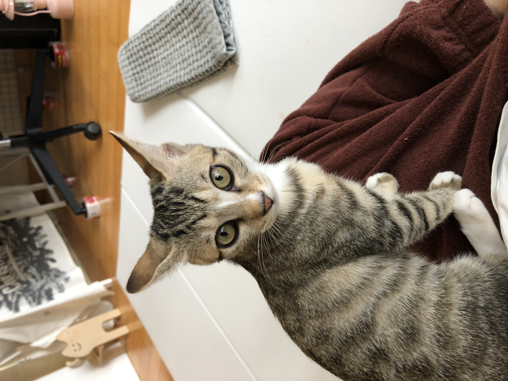

구슬이는 살구의 뒤를 이어 등장한 작고 포실한 고등어 야옹이다. 구슬이는 아주 어리광쟁이인데, 잠에서 깨거나 눈이 마주치면 예쁜 얼굴을 하고 야옹거린다. 털도 얼마나 포실포실 부드러운지 쓰다듬고 있으면 감탄을 금치 못한다. 살구는 매끈 & 부드러운 털을 가지고있고, 구슬이는 포실하고 가벼운 보드라움을 지니고 있다. 성격도 살구와 반대로 쓰다듬받는것을 좋아하고 사람몸에 올라오는 등 아주 친근한 성격을 가지고 있다. 